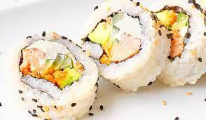

|
La palabra sushi es originaria de Japón y es la combinación de dos vocablos: “su”, qué quiere decir vinagre
y “shi-meshi”, que significa arroz. De este modo, su traducción sería algo así como arroz avinagrado. Asimismo,
la clase de arroz que se emplea en el sushi se denomina koshihikari. Sus principales características son su forma
redonda, su pequeño tamaño, su sabor dulce y la gran cantidad de almidón que presenta. Para elaborar este arroz,
primeramente se debe desalmidonar, pasándolo por agua entre siete u ocho ocasiones hasta que esta quede transparente.
|
 |